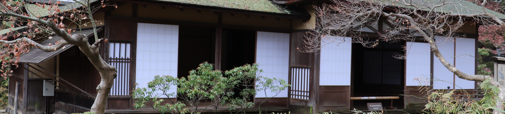

|
作文ワールドⅢ 社会科作文 −その５− はじめに も く じ |
はじめに
社会科作文・その４もいっぱいになってきたので、「その５」を設けることにする。
「４」の続きとして国際交流作品や紀行文が中心になるが、
ジャンルににとらわれず、いろいろユニークな作品を紹介することにしよう。
| １．『韓国のおばあちゃん』 − ひなのさん（高１） ２．『韓流ショッピング』 − ひなのさん（高１） ３．『アイルランド』 − 蛍さん（小６） ４．『いとこたち』 − 蛍さん（小６） ５．『オランダ旅行』 − 涼夏さん（中２） ①「風車」 ②「買い物」 ③「運河」 ６．『フィリピン旅行』 − 詩乃ちゃん（小４） ①「トイレットペーパー」 ②「英語教室」 ③「パラセーリング」 ７．『』 |
「東日本大震災」の作文・第１部 第２部・第３部
作文打出の小づち
総もくじ
| 添削例・諸注意 | |
| 春休みに家族でソウルに行きました。ソウルでは明洞、南大門市場、三清洞、カロスキルなどを見て回りました。二日目に私たちは旅行客に人気があるという梨花洞という街を訪れました。小高い丘の上にある階段の多い街で、「路上美術館」などがあります。建物の外壁や階段にたくさんのかわいらしい絵が描かれていて、それらを見ながら散歩ができます。 地下鉄をおりてから、その街を目指しましたが、なかなか行き着けません。どうしようかと地図を片手に立ち止まっていると、小柄なおばあちゃんが「こんにちは」と話しかけてきました。おばあちゃんの様子から、地元の人だと分かり、日本語を話せそうだったので、私たちは地図を見せて、「ここに行きたい」と言ったところ、おばあちゃんは「いっしょに行ってあげよう」と言いました。梨花洞まではそこから２００メートル以上ありましたが、とことこと先に立って歩き出しました。おばあちゃんは８６歳で、今はこの街で一人で暮らしていると話してくれました。北朝鮮で生まれて、韓国の大学で教師になる勉強をし、それから教師として１０年以上日本で暮らしたことがあろと言い、日本で暮らした時、みんなに親切にしてもらったから、日本人に親切にしてあげたいと言いました、また、東日本大震災の時から連絡の取れない友だちのことが心配で、日本に行きたいとも言いました。 てくてく歩いて梨花洞に着くと、おばあちゃんは道端に座り込んで、リュックサックから紙とペンを取り出して、住所と名前を書いてくれました。私たちも住所と名前を書いて渡した後、いっしょに写真を撮りました。坂を上っていく私たちを、おばあちゃんは首を伸ばして見送ってくれました。 帰国してから、おばあちゃんに写真と手紙を送りました。見知らぬ人とのたった一度の出会いが、私の中に温かい韓国の思い出を作ってくれました。 |
国際交流というのは、ほんとうはこういうものなのだろうな。
もどる
２．『韓流ショッピング』 （高１ 馬路ひなの）
その半年後、……
| 添削例・諸注意 | |
| 12月24日から26日まで、母と妹と3人で韓国のソウルへ行きました。４月に初めて韓国に行ってから２回目になります。 韓国では食べ物や化粧品、買い物などを楽しむことができます。ソウルでは、町を歩いていると、化粧品店が目につきます。それぞれの店員が通りに出て、試供品を配ったり、ハンドクリームを試させたりしています。店によって売っているものが違うので、私たちは事前に雑誌で、人気商品や目玉商品をチェックしておきました。 新砂という駅の近くにある、’Nature Republic'という店に入りました。この店は、韓国のアイドルグループの「ＥＸＯ（エクソ）」とコラボして、ハンドクリームとリップクリームを作っています。私も妹もエクソの大ファンで、特に妹はそのハンドクリームをどうしてもほしいと言って、必死に探し求めていました。日本では手に入れることはできないので、ハンドクリームを目の前にして、妹は大興奮でした。エクソの９人のメンバ＾−それぞれの種類があるため、妹は誰のを選ぼうか迷っていました。すると、女の店員さんが来て、「どれかほしいものはありますか」と、日本語で話しかけてきました。 まさか日本語を話せる人がいるとは思わなかったので、私たちはその人と３人で、どのハンドクリームがよいか、おしゃべりしました。彼女は半年間、東京に留学していたそうで、日本が好きで、こうして日本語で話せるのがうれしいと言いました。選び終わって、そのほかにシャンプーやリンス、アロエのジェル、口紅などを買いました。シャンプーには２種類あり、汚れを落とすものとつるつるになるものとがあると言いましたが、「汚れ」という言葉が出てこなくて、私たちが言うと、それだと言って、少し悔しそうにしていました。 私たちはかごいっぱいに買いましたが、彼女は「これも試してみてね」と言って、顔につけるパックやオイルなどをたくさんくれました。また、エクソの写真も袋に入れてくれました。街中で道を尋ねても、ほとんど無視されて、私たちは寂しくなっていましたが、この店に入って、店員さんとはいえ、親切にもてなしてくれたので、韓国旅行の、忘れられない思い出になりました。 |
買い物だけでなく、心温まる思いもして、
よい旅行になったようだ。
もどる
３．「アイルランド」（小６ オコナ−蛍）
アイルランドはどこにあるのかな。興味深い話を紹介しよう。
| 添削例・諸注意 | |
| 去年の春、私はアイルランドの学校へ、３週間留学しました。いとこがアイルランドにいるので、毎日いっしょに学校へ行きました。 アイルランドの学校は、朝９時から昼２時までです。給食はなくて、弁当を持っていきます。小さな学校なので、１つの教室に学年が２つ入っていました。 勉強する教科は日本とほとんど同じです。ただ、休み時間を告げるチャイム以外、チャイムは鳴らないので、先生に言われた教科をやっていきます。休み時間のチャイムが鳴ると、勉強が終わっていなくても、みんなあっという間にグラウンドへ出て行ってしまいます。日本ではあまり見ない光景なので、新鮮でした。 休み時間は大きく分けて午前中と午後の２回あります。休み時間には、ボールで遊んだり、なわとびをしたりします。なわとびのなわは、日本の物はゴム製の持ち手があるけど、アイルランドのはつなみたいで、持ち手はありません。そのなわとびで、私が後ろ交さとびをしていると、すぐに学校じゅうにうわさが広まり、「やって！」と急き立てられました。アイルランドでは授業でなわとびをすることはないようです。 授業では、「日本では馬を食べる」という発表がありました。私は聞いたことがなかったので、コメントを付けることができませんでした。 アイルランドの子はみんな自分なりの意見をもっていて、それをはずかしがらずに堂々と表現していたのが印象的でした。とてもエキサイティングで、もっと長くいていたいと思ったくらいでした。 アイルランドに行って気づいた日本のよさは、文ぼう具やなわとびの性能のよさです。私が学校へ持っていった消せるペンなどは、最後にお別れする日までもどってきませんでした。 |
※ 一人一人、違った教科を自習するのかな。 ※ 「馬刺し（ばさし）：馬の肉の刺し身」なら、食べる地方がある。マグロの赤身のような肉にショウガじょうゆをつけて食べる。 ← ……もっと長くいて、聞いていたいと…… |
国によっていろいろな違いのあるのは、おもしろいね。
もどる
| 添削例・諸注意 | |
| 私のいとこは１０人います。そのうち外国に住んでいるのは８人です。私のお父さんがアイルランド系のイギリス人だから、いとこもイギリスやアイルランドに住んでいます。 いとこが日本から遠く離れた所に住んでいるから、たまにしか会うことができません。でも、ビデオ電話で話すことができるので、話はよくします。ただし、ビデオ電話でも、電話でも、外国にかける時は時差に気をつけなければいけません。イギリスなどとはおよそ８時間の時差があるので、話せるタイミングを合わせるのがとても難しいです。時差さえなければ、いつでも顔を合わせることができるのにと思います。 私は今年３月、アイルランドのいとこの所に留学しました。弟とお父さんといっしょに行きました。３週間、いとこの家に泊まりました。そのいとこは私より１つだけ年下で、ほとんど同い年なので、とても楽しく過ごせました。その子には大学生のお姉さんがいて、ふだんはイギリスの大学にいるけれど、ちょっとだけ帰ってきてくれました。そこで、弟と私は２人のいとことトランポリンで跳んだりはねたりして、とても楽しくい日々を送ることができました。 もし私がいとこたちの近くに住んでいたら、もっと会うことができるのになあと思います。ちなみに、おとうさんのいとこは３０人います。今でも、お父さんはいとこたちと仲良しです。私にとっても、いとこたちは気軽に話したり遊んだりできる特別な存在です。 |
地球上の、ずっと離れた所にも親しい仲間がいるのは、
にぎやかで心強いことだろうね。
もどる
５．『オランダ旅行』（中２ 小林 涼夏）
オランダといえば、チューリップと風車かな。
①「風車」
| 添削例・諸注意 | |
| ４月２９日から５月７日まで、私は母と叔母の３人でオランダに旅行しました。 オランダに着いて３日目に風車を見に行きました。風車は運河に沿って１０ぐらい並んでいました。風車はもともと小麦をひいて粉にするために造られたものです。土手の片側には草原が広がっていて、ヒツジやヤギ、カモがいました。ヒツジはすぐ近くで寝ていて、さわることができました。ふわふわしていて、かわいかったのですが、外で飼っているので、薄汚れていました。周りの人もさわっていましたが、そのあと手を洗っていました。私も洗いました。 一番奥の風車に行くと、登ることができました。その風車は２階建ての家の１．５倍ぐらいの高さで、横はふつうの家の大きさと同じぐらいでした。中にはおみやげ屋あり、有料範囲に入ると、手前にとても急な階段がありました。階段はとてつもなく急なのに、途中まで手すりがありません。足を震わせながら登っていくと、階段はぎしぎし鳴りました。登りきっても、下を見るのがこわくて、後から登ってくる母を見ることができませんでした。狭い踊り場から短い階段を登ると、デッキに出ました。そこからは草原が永遠に続いているかのように見えました。 デッキはいつ壊れてもおかしくないような板でできていて、下の景色が板と板の間から見えました。下が地面の時もこわいけれど、下が運河の所はもっとこわくて、高所恐怖症でもないのに足がすくみました。母は端っこで写真を撮りたがって、前の人が柵に寄りかかって写真を撮っていたので、私にもそうしてほしいと言いました。私は無理だと言いましたが、母の言葉に押されて、柵に手をかけて撮ることになりました。私は、できるだけ柵に力を加えないようにしていましたが、全然笑っていないと言われ、何回も撮り直しをさせられました。 帰りは後ろ向きで階段を下りました。上りよりも最初はこわかったけれど、最後のところは後ろ向きのほうがこわくありませんでした。 |
階段といい、デッキの柵といい、スリル満点だね。
もどる
| 添削例・諸注意 | |
| 私たちがオランダのアムステルダムで過ごした8日間のうち、4日は買い物でした。 1日目は、ダム広場の近くにある大きなデパートに行きました。私たちが泊まっていたホテルからは、運河を３つほどはさんで、歩いて15分ほどの所にあります。ところが、私たちはそこへ着くのに２時間かかりました。途中の通りに雑貨屋や洋服屋、お菓子屋などがあって、１つ１つに寄っていたからです。20か所ぐらい寄っていきましたが、買ったのは、私がフラミンゴの手帳、母がペンとフラミンゴのコップだけでした。どこのお店にも１つはフラミンゴの商品がありました。やっとデパートに着いたのは1時過ぎでした。デパートでは、私の洋服を1時間ほど見ました。5着試着して、2着買いました。１つはひらひらのピンクのスカートで、もう一つは青色のセーターです。とても気に入っています。 2日目は、別のデパートに行きました。そのデパートは、見た目がレンガで、おしゃれな感じでしたが、中は日本のデパートと変わりがなくて、がっかりしました。私たちはそのデパートで靴を２時間ほど見ました。そこには何社ものブランドが入っていました。私は気に入った靴を1足見つけ、母のところへ持っていきました。ところが、母はその靴を一度も見ずに「ダメ」と言いました。私は「靴を見ていないのに、なんでダメだと思うの？」と聞くと、「あなたには美術のセンスがなく、あなたが選ぶ服や靴は、いつもよくないからだよ」と言いました。少し傷つきましたが、いつも言われているので、無視しました。心の中では、私は美術の成績が10段階の４なのだから、しょうがないかとも思いました。 3日目は、ブランド通りを歩きました。その時は、母と叔母がバッグや洋服、靴、化粧品をたくさん買いました。1つのお店に短くても30分はいたので、私はずっとケータイでゲームをしていました。ある店で、入って15分ぐらいすると、視線を感じました。店員が不思議そうに私を見ています。それは多分、誰の子か分からない子どもが、姿勢を悪くして、ずっとゲームをしていたからだと思います。 最後の日に、買い残したものを買いに行きました。私が2日目からほしがっていたプーマの靴を、母がとうとう買ってくれました。黒色の靴で、後ろにリボンが付いています。プーマのマークだけが金色なので、ロゴが目立ちます。うれしくて、買ってすぐはいて、1日を過ごしました。 |
○ ダム広場は アムステルダムの中心にあるんだね。 ○ 正直でいいね。 |
いったんはあきらめていた靴を買ってもらって、
スキップでもしている様子が目に浮かぶ。
| 添削例・諸注意 | |
| 3日目に、私たちは運河で遊覧船に乗りました。遊覧船に乗るにはチケットが必要です。そのチケットは当日は買えません。前の日に買っておかないと買えないほど混んでいました。私たちは6日目に行くベルギーのツアーのチケットに、遊覧船のチケットが付いていたので、急に言っても乗ることができました。 町の中心の大きな運河の所に行って遊覧船に乗りました。出発と同時にガイドが乗ってきました。ガイドがいきなり何かを叫んだので、びっくりしていると、英語が分かる外国人が「フォー」とか「イェーイ」と言い出したので、私も思わず、意味も分からず「イェーイ」と叫んでしまいました。すると、隣りに座っていた外国人の女性が、私が英語を話せると思ったのか、声をかけてきたので、戸惑いながら、“I can't speak English.”と言って、何度も“Sorry”を連呼してしまいました。 出発すると、すぐに解説が始まりました。何を言っているのか分からないので、ガイドが指さす方をずっと見ていました。船は有名なスポットに差しかかりました。そこは運河が交わって十字路になっている所です。横を見ると、1つの橋が見えて、周りの人が写真を撮り始めたので、何だろうと思っていると、船が進んで橋が4つ縦に並んでいるように見えました。１つの橋が４つに見えて、とてもきれいな光景でした。周りの人は動画を撮っているようでした。 建物のある通りに沿って進んで行くと、建物がゆがんでいるように見えました。一瞬、目の錯覚かなと思いましたが、ガイドがそれを見て解説を始めたので、英語が分かる叔母に何と言っているのか聞いてみると、アムステルダムでは引っ越しが多いから、窓から簡単に荷物の引き上げができるように、わざと建物を斜めにしているのだということでした。干拓を繰り返して造成された地盤に建てられたので、しかたなくゆがんだ家もあると言っていました。このような、豆知識のようなことを聞くのはおもしろいなと思いました。 運河からはアンネの隠れ家を見ることができるということでしたが、その時はそこを通らなかったので、残念ながら見ることができませんでした。 |
○ 愉快だね。叫んでいる姿が目に浮かぶ。 ○ おもしろいねぇ。 |
アンネの隠れ家を見られなかったのは残念だけど、
おもしろい旅だったね。
もどる
| 添削例・諸注意 | |
| ７月２７日から８月６日まで、私はお母さんと妹といっしょに、フィリピンのセブ島という所へ行きました。お母さんが英語学校に行きたいと言ったので、私も６日間も行くことになってしまいました。 その学校のスタッフの人が空港までむかえに来ました。車でホテルへ行くとちゅう、日本人のスタッフがセブ島の説明をしてくれました。 フィリピンに着いて、おどろいたことが３つあります。１つ目は、貧富の差です。タクシーに乗って見ていると、きれいな家が続くと、次はバラックのような家が続くという感じでした。「貧富の差があるんだな」と思いました。２つ目は、車のクラクションです。日本ではクラクションは「どいて」という意味で、ちょっと鳴らすけれど、フィリピンでは、「とおりますよ」「速度をあげますよ」など、いろいろな意味で鳴らしていました。プップーやブーという音がうるさかったです。３つ目はトイレットペーパーです。日本のトイレットペーパーはトイレに流すけど、フィリピンではゴミ箱にすてます。それは、下水管が小さく、トイレットペーパーがつまってしまうからということでした。つまらせた人は自分で直さないといけないので、私は気をつけようと思いました。 他の国へ行くと、日本と違うことがあって、おもしろいと思いました。 |
6日もいれば、もっといろいろな発見があるだろうね。
もどる
フィリピンは英語を話す国なのだね。
| 添削例・諸注意 | |
| セブ島に着いた次の日から、6日間の英語教室が始まりました。 1日目は、新しく入った人たちだけのクラスがありました。そのクラスの先生は女の先生で、遊びながらじゅ業をしたので、おもしろかったです。私と同じ日に入った子たちは英語がペラペラだったので、くやしかったです。2日目からは個人レッスンなので、ドキドキしました。その日は6時間じゅ業でした。個人レッスンだとだれも助けてくれないので、辞書で調べたり絵をかいたりして伝えようとしました。3日目も、4日目もうまく言葉にならないので、大変でした。5日目になって、頑張ったからといって、映画を見せてくれました。でも、そのあとはきびしいじゅ業になりました。最終日になって、はなちゃんという７さいくらいの子とお友だちになりました。ないしょで、洋服の話などして、楽しくすごしました。 その日は卒業式です。メダルやキーホルダーをもらいました。キーホルダーにはサンダルがついていて、かわいいので、たからものにしようと思いました。 |
← ……ならないので、いらいらして、とてもつかれました、 |
最後にいいことがあったのだね。がんばってよかった。
もどる
英語の勉強が終わったら、４日間のバカンスになった。
| 添削例・諸注意 | |
| バカンスの最終日にパラセーリングをしました。 船に乗って少し沖に出て、気球に乗ります。私はお母さんと並んで、ロープのいすにすわりました。その気球をモーターボートが引っぱります。モーターボートが動き出すと、気球が海からはなれて、体がうき上がりました。はじめはワクワクして景色を見ていましたが、まわりは海ばかりで、だんだんおもしろくなくなってきました。１０分ほどたつと、気持ちが悪くなってきました。お母さんが「顔色悪いけど、だいじょうぶ？」と聞いてきました。私は「だいじょうぶ」と答えましたが、ほんとうは正反対で、「やばい」と思いました。１５分ほどたって、やっとパラセーリングが終わりました。 海がきれいだったので、写真をとりたかったけど、よっていてとれなくて、残念でした。今度来た時はよわやいようにして、空からきれいな写真をとりたいと思います。 |
４日の間には、泡のプールに入るなどして、
バカンスを楽しめたようだ。
もどる
７、『 』
準備中

しばらくお待ちください。
ご意見・ご希望・ご質問はこちらへ
| 添削例・諸注意 | |
